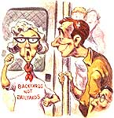

LAST LAUGH
Not in Mary's backyard.
Last weekend, we had a big to-do here in Austin when the local transit agency brought a light-rail demonstration to town. They've been talking about light rail for a long time and have finally started selecting routes. The demo trip was supposed to use existing tracks to show off the nice, new German cars.
Of course the local media went into a frenzy about it. "What a waste!" they declared. (I especially loved the new, highly paid anchorwoman from San Francisco who arrived six months ago and felt secure enough as a resident to say the train was a boondoggle.)
Laura and I figured we would go out and sample the train on Saturday when it was supposed to be running near the big mall. So we headed up there and found a stuffed parking lot and got in line on the makeshift area next to the tracks. The place was packed with families and kids with balloons. An overly loud deejay "entertained" us. It was a long wait for the 15-minute excursions. Thankfully, I had brought both sections of the newspaper. As I was waiting in line, I noticed a small group of people approach the information kiosk. They were middle-aged, some older, all wearing white Tshirts that said "Backyards not Railyards" on the front, and had a train with a slash through it on the back. The women were also wearing red bandannas around their necks.
I figured they were protesting the route because they lived along the tracks. I noticed none of them waited in line. They all just went right up to the front and stood around in a group.
Finally we got our chance to get on, scrambling over a jerry-rigged platform onto the Siemens car. Inside, it was standing room only, and we grabbed straps next to the German language ticket machine.
I noticed the T-shirt-wearing protesters were on the train car too.
For the first five minutes we traveled north from the mall while a Siemens representative spoke about the glories of rail. As he spoke, we went through a neighborhood and you could really see the bric-abrac-strewn backyards of the residents.
After the company spokesman had finished, the fun began.
One of the women in T-shirts, who looked almost exactly like Mary Laycock-my high school journalism advisor, who had fired me as editor of the school newspaper-started screaming at the top of her lungs, giving a lecture in a kindergarten teacher voice about how evil this all was and how Capitol Metro was screwing the community. When the train stopped and turned back after five minutes, she went ballistic and said, "You promised to go to OHLEN ROAD!!! THAT'S WHAT THE SCHEDULE SAYS!"
I deduced that Mary lived along Ohlen Road, and her group had some sort of protest set up there, which was thwarted by the driver, who had turned around too soon.
The bandanna-wearing Laycock lookalike woman kept screaming and screaming like this was her private ride, even after the spokesman said there would be a special ride that afternoon for the "neighborhood associations." All the yelling conspired to turn my nice Saturday ride into a descent into the nether regions.
I figured I couldn't yell back. That would make it worse. So I weaved my way to the center of the car where she was standing. I stood next to her. I mean RIGHT next to her, gawking at her and equipped with the biggest, goofiest grin I could muster, my face about a foot and a half from hers. She was facing at right angles to me and still talking, but now only whining in normal volume.
I just stood there and grinned at her. I was all set for her to confront me, and my explanation would be: "Well ma'am, you were making all sorts of noise. I figured you wanted people to PAY ATTENTION to you."
But she didn't say anything to me or even acknowledge my presence. She just muttered her stuff at a lower volume and avoided turning her head. Sweat began pouring down her face like a river. Not once during the rest of the trip did I take my eyes off her.
Even as we got off the car, I kept my eyes glued to her. When our excursion was over, Laura asked me, "What did you say to that woman? You really shut her up."
"Not one word," I said. Diplomacy really is the art of knowing what not to say.
|
 |
|
|